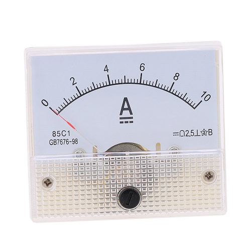
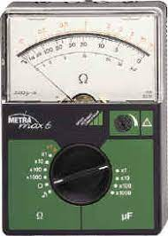
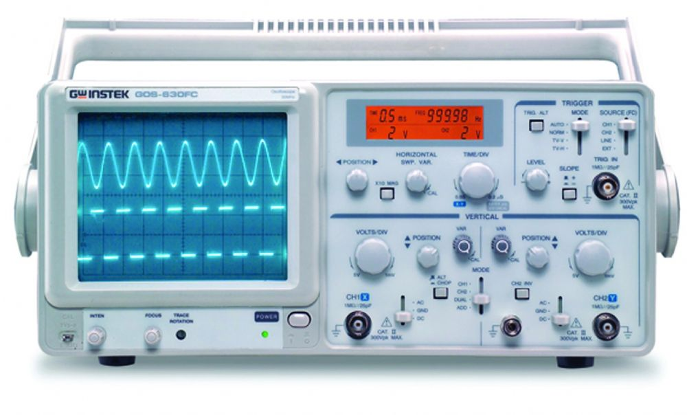

ALAT UKUR TEKNIK KOMPUTER JARINGAN
Alat Ukur Elektronika dan Fungsinya | Alat ukur elektronik (listrik) merupakan perkakas/alat yang digunakan untuk mengukur besaran-besaran listrik seperti hambatan listrik (R), kuat arus listrik (I), beda potensial listrik (V), daya listrik (P), dan lainnya. Terdapat dua jenis alat ukur yaitu alat ukur analog dan alat ukur digital.
1 Ampermeter Amperemeter adalah alat yang digunakan untuk mengukur kuat arus listrik baik untuk listrik DC maupun AC yang ada dalam rangkaian tertutup. Amperemeter biasanya dipasang berderet dengan elemen listrik. Cara menggunakannya adalah dengan menyisipkan amperemeter secara langsung ke rangkaian. 
2 Ohm-meter Ohm-meter merupakan alat yang digunakan untuk mengukur hambatan listrik di rangkaian tertutup atau daya untuk menahan mengalirnya arus listrik di sebuah konduktor. Ohmmeter juga dapat diartikan sebagai alat untuk mengukur resistansi. 
3 Oscilloscope Osiloskop adalah alat ukur elektronika yang fungsinya memproyeksikan bentuk sinyal listrik agar dapat dilihat dan dipelajari. Pada osiloskop dilengkapi dengan tabung sinar katode. Kemudian peranti pemancar elektron akan memproyeksikan sorotan elektron ke layar tabung sinar katode. 
4 Generator fungsi
Generator fungsi atau pembangkit fungsi adalah bagian dari peralatan atau peranti lunak uji coba elektronik yang digunakan untuk menciptakan gelombang listrik. Gelombang ini dapat berulang-ulang atau satu kali yang mana dalam kasus ini diperlukan semacam sumber pemicu, secara internal ataupun eksternal.